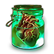
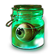
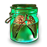
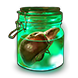

PoE Romp - Organ Finder
Maps by organ
2) Select maximum number of dropped organs
If the tool does not find any maps with this limit, it will add 1 to the limit until at least one map has been found.
3) Find maps you want to run
You can sort by clicking on the table headings and you can search by any value in the table.
| Map | Region | Tiers | # | Organs |
|---|
4) Run the listed maps
By choosing a single unique organ inside of a map to create the Metamorph encounter, you are guaranteed to get an organ that matches this type.
Choosing multiple unique organs will drop you one of those randomly .
Organs by map
-  Heart
-  Eye
-
 Brain
Brain
-  Lung
-  Liver
Changelog | Source Code | Map & Organ Data | Design Inspiration | Images
Questions, feature requests or feedback? Comment on reddit!
Ideas for a new tool that would benefit the community? Message me on reddit!
Made by Romp. Last updated December 18, 2019.